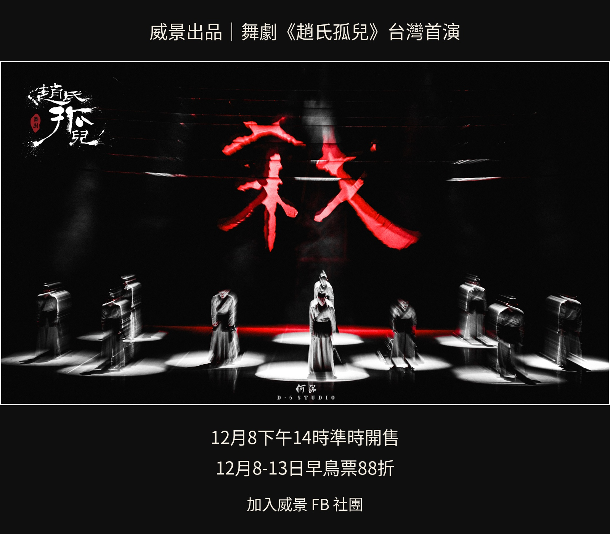
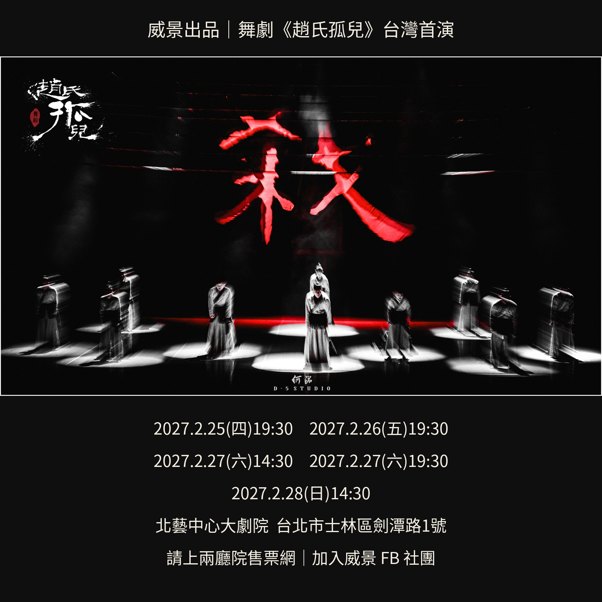

2026-11-17
19:30 · FB 粉專
漫畫週更①
配用文案｜漫畫連載 1｜人物關係圖 ↗民族舞劇《趙氏孤兒》
節目展示
把結局，留給劇院。
一個人的抉擇，
一整座劇院的呼吸。
2027.2.25–28
北藝中心大劇院
民族舞劇《趙氏孤兒》
主打預告 / 01
從託孤到復仇，
走進命運的抉擇。
完整版預告｜約 3 分 4 秒
民族舞劇《趙氏孤兒》
主打預告 / 02
民族舞劇《趙氏孤兒》
主打預告 / 03
民族舞劇《趙氏孤兒》
角色介紹 / 01
飾演｜胡陽
約 24 秒
民族舞劇《趙氏孤兒》
角色介紹 / 02
飾演｜劉立民
約 24 秒
民族舞劇《趙氏孤兒》
角色介紹 / 03
飾演｜孫富博
約 24 秒
民族舞劇《趙氏孤兒》
角色介紹 / 04
飾演｜楊奕
約 24 秒
民族舞劇《趙氏孤兒》
角色介紹 / 05
飾演｜田呈扉
約 24 秒
民族舞劇《趙氏孤兒》
舞台細節
約 24 秒
民族舞劇《趙氏孤兒》
五集連載，從認識人物到追看抉擇，再一起走進劇院。
從一個承諾，到十六年的守護。讀完故事，邀朋友一起進劇院。
AI 漫畫示意，實際為真人舞台劇
11/17 認識人物，11/20 看見託付，11/24 追問救孤的代價，12/1 揭開身世，12/5 以復仇的抉擇帶到 12/8 14:00 開賣。11/20 與 12/5 加更。
12/15 起輪流回顧前四集，持續到 2027/2/25 首演。12/13 後停用帶早鳥資訊的封面、影片與第五集。九頁導讀包含五頁完整故事與四頁分幕重點；各集按鈕直接翻到相應故事段落。
發布指南
一套素材，依時程分批放出。每張日期卡片都列出渠道、素材與配用文案，照著準備即可。
短片與五集漫畫輪流登場，讓觀眾從認識人物、追看故事，一路關注到開賣與首演。
每次發布都帶上社團邀請與購票入口，讓有興趣的朋友知道去哪裡追蹤消息、選擇場次。邀朋友一起進劇院，把結局留給現場。
民族舞劇《趙氏孤兒》
把結局，留給劇院
選一場，和朋友一起入戲。
2027.2.25–28
北藝中心大劇院
立即購票｜兩廳院售票網更多影片・幕後彩蛋 →主辦單位 威景國際掃描 QR，關注威景 Facebook
發布指南
時間皆為台北時間。點選素材直接觀看；「配用文案」會在新分頁開啟正式文件，依標題找到對應段落。短版可搭配同日貼文使用。
12/8 14:00 開賣；12/8–12/13 早鳥票 88 折。12/13 後只使用不含早鳥資訊的漫畫前四集與首演圖，停用含早鳥資訊的封面、影片與第五集。
漫畫週更①
配用文案｜漫畫連載 1｜人物關係圖 ↗漫畫週更①
配用文案｜漫畫連載 1｜人物關係圖 ↗活動預告

開啟完整圖片配用文案｜FB 活動頁文案 ↗漫畫加更②
配用文案｜漫畫連載 2｜托孤 ↗漫畫加更②
配用文案｜漫畫連載 2｜托孤 ↗預熱
搭配同日貼文與下方文案發布。
預熱
配用文案｜影片①｜劇情導讀 ↗漫畫週更③
配用文案｜漫畫連載 3｜救孤 ↗漫畫週更③
配用文案｜漫畫連載 3｜救孤 ↗漫畫轉發
配用文案｜相關 FB 社團轉發短文案 ↗卡司
搭配同日貼文與下方文案發布。
發布前核對畫面人物與演員姓名。
發布前核對畫面人物與演員姓名。
發布前核對畫面人物與演員姓名。
發布前核對畫面人物與演員姓名。
發布前核對畫面人物與演員姓名。
發布前核對畫面人物與演員姓名。
發布前核對畫面人物與演員姓名。
發布前核對畫面人物與演員姓名。
卡司
配用文案｜影片②｜卡司介紹 ↗漫畫週更④
配用文案｜漫畫連載 4｜成長 ↗漫畫週更④
配用文案｜漫畫連載 4｜成長 ↗夥伴轉發
配用文案｜合作夥伴 FB 轉發短文案 ↗開賣倒數
搭配同日貼文與下方文案發布。
開賣倒數
配用文案｜FB 社團｜倒數提醒 ↗開賣倒數
搭配同日貼文與下方文案發布。
開賣倒數
配用文案｜FB 社團｜倒數提醒 ↗開賣倒數
配用文案｜FB｜倒數提醒 ↗開賣倒數
配用文案｜FB 社團｜倒數提醒 ↗開賣倒數
配用文案｜FB｜倒數提醒 ↗開賣倒數
配用文案｜FB 社團｜倒數提醒 ↗開賣倒數
配用文案｜FB｜倒數提醒 ↗開賣倒數
配用文案｜FB 社團｜倒數提醒 ↗開賣倒數
搭配同日貼文與下方文案發布。
開賣倒數
配用文案｜FB 社團｜倒數提醒 ↗社團開賣前提醒
配用文案｜FB 社團｜開賣通知 ↗正式開賣
配用文案｜FB 廣告文案｜短版 ↗正式開賣
配用文案｜FB 活動頁文案 ↗正式開賣
配用文案｜FB 粉專貼文 ↗正式開賣
配用文案｜FB 社團｜開賣通知 ↗早鳥期
配用文案｜FB 廣告文案｜長版 ↗早鳥期
先核對實際銷售狀況；符合內容才使用，否則使用本列開賣通知。
早鳥期
配用文案｜FB 社團｜早鳥提醒 ↗早鳥期
先核對剩餘席次；符合內容才使用，否則使用本列開賣通知。
早鳥期
配用文案｜FB 社團｜早鳥提醒 ↗早鳥期
前幾場實際售出八成時評估加演；確認新增日期、時間、場地、票價與開賣資訊後才使用，否則使用本列開賣通知。
早鳥期
配用文案｜FB 社團｜早鳥提醒 ↗延續至首演
配用文案｜FB｜延續導讀 ↗延續至首演
配用文案｜FB 社團｜延續導讀 ↗延續至首演
配用文案｜FB｜延續導讀 ↗延續至首演
配用文案｜FB 社團｜延續導讀 ↗延續至首演
配用文案｜FB｜延續導讀 ↗延續至首演
配用文案｜FB 社團｜延續導讀 ↗延續至首演
配用文案｜FB｜延續導讀 ↗延續至首演
配用文案｜FB 社團｜延續導讀 ↗延續至首演
配用文案｜FB｜延續導讀 ↗延續至首演
配用文案｜FB 社團｜延續導讀 ↗延續至首演
配用文案｜FB｜延續導讀 ↗延續至首演
配用文案｜FB 社團｜延續導讀 ↗延續至首演
配用文案｜FB｜延續導讀 ↗延續至首演
配用文案｜FB 社團｜延續導讀 ↗延續至首演
配用文案｜FB｜延續導讀 ↗延續至首演
配用文案｜FB 社團｜延續導讀 ↗延續至首演
配用文案｜FB｜延續導讀 ↗延續至首演
配用文案｜FB 社團｜延續導讀 ↗延續至首演
配用文案｜FB｜延續導讀 ↗延續至首演
配用文案｜FB 社團｜延續導讀 ↗延續至首演
配用文案｜FB｜延續導讀 ↗延續至首演
配用文案｜FB 社團｜延續導讀 ↗首演前提醒

開啟完整圖片配用文案｜FB｜首演提醒 ↗首演前提醒
開啟完整圖片配用文案｜FB 社團｜首演提醒 ↗首演日
開啟完整圖片配用文案｜FB｜首演日 ↗首演日
開啟完整圖片配用文案｜FB 社團｜首演日 ↗